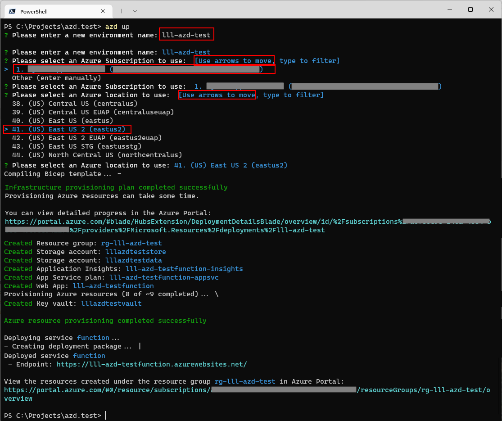
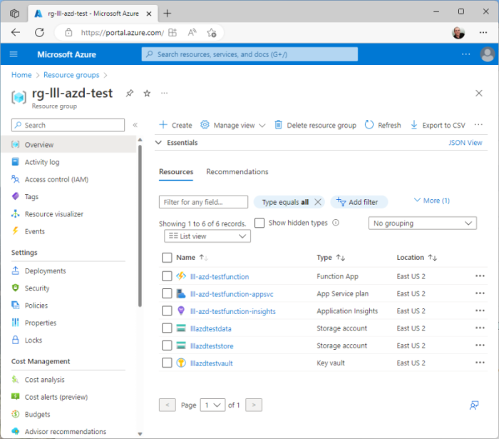

AZD Command Line Deploy#
The Azure Developer CLI (azd) is an open-source tool that accelerates the time it takes to get started on Azure. azd provides a set of developer-friendly commands that map to key stages in a workflow (code, build, deploy, monitor).
If a project is configured to use azd, then these commands and notes apply. To learn how to make a project compatible with azd, see Making Your Project 'azd' Compatible.
Commands#
The three commands of most interest are:
- azd up: provisions Azure resources, builds app, and deploys it to Azure
- azd provision: provisions Azure resources
- azd deploy: builds app and deploys it to existing Azure resources
Typically a developer with either do the up command to do everything at once, or do the provision and deploy commands separately.
Environment Names#
When this command is run for the first time, a prompt will ask for the the "Environment Name", the Azure Subscription to use and the Azure Region to deploy to. Choose the "Environment Name" carefully, as it will be used as the basis to name all of the resources, so it must be unique.
Note: Personally, I like to use a format like
In that case, if Environment Name is equal to:
lll-function-demo
AZD will create a Azure resources with these names:
| Azure Resource | Name |
|---|---|
| Resource Group | rg-lll-function-demo |
| Azure Function | lll-function-demofunction |
Storage accounts and other resources will be named in a similarly fashion.
Visual Studio Code#
There is a Azure Developer CLI extension available in Visual Studio Code. If that is installed, it is easy to pop up the command window like this:

Command Line#
These commands can also be run on the command line, like this:
> azd up
Example Input#

Example Output#
